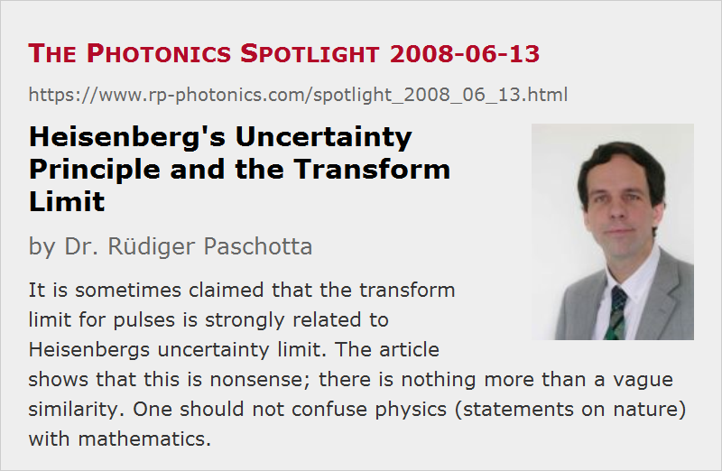

Heisenberg's Uncertainty Principle and the Transform Limit
Posted on 2008-06-13 as a part of the Photonics Spotlight (available as e-mail newsletter!)
Permanent link: https://www.rp-photonics.com/spotlight_2008_06_13.html
Author: Dr. Rüdiger Paschotta, RP Photonics Consulting GmbH
Abstract: It is sometimes claimed that the transform limit for pulses is strongly related to Heisenbergs uncertainty limit. The article shows that this is nonsense; there is nothing more than a vague similarity. One should not confuse physics (statements on nature) with mathematics.
Ref.: encyclopedia articles on transform limit, bandwidth-limited pulses, time–bandwidth product, Spotlight article of 2007-10-11: "Understanding Fourier Spectra"
Optical pulses are subject to the well-known transform limit: for a given pulse duration, there is a minimum spectral bandwidth (width of the Fourier spectrum). This limit is sometimes connected with Heisenberg's uncertainty principle, saying (in one form) that the more well-defined the time of some process is, the bigger the uncertainty on the involved energy transfer.
This does sound somewhat similar, taking into account that energy is related to frequency in quantum mechanics, and Fourier transform pairs are involved in both cases. Nevertheless, it is nonsense to claim that the transform limit for pulses is strongly related to Heisenberg's uncertainty limit. After all, we are dealing with two very different issues:
- The involved property of Fourier transform pairs (that stronger localization of one partner implies weaker localization of the other one) is a purely mathematical issue, which has been known for a long time and is in no way controversial.
- On the other hand, Heisenberg's uncertainty principle is a piece of physics, which was revolutionary at its time, and is still not accepted by everybody. Heisenberg's reasoning does of course use quite a bit of mathematics, including properties of Fourier transform pairs. This cannot disguise, however, that essentially it is physics, making statements on nature, rather than mathematics.
In conclusion, there is a vague similarity, nothing more. The transform limit has essentially nothing to do with quantum mechanics (or quantum optics).
Another question would be whether it was a good idea to call Heisenberg's uncertainty principle a principle. But before making too many enemies, including famous (dead) physicists, I stop the discussion at this point!
This article is a posting of the Photonics Spotlight, authored by Dr. Rüdiger Paschotta. You may link to this page and cite it, because its location is permanent. See also the RP Photonics Encyclopedia.
Note that you can also receive the articles in the form of a newsletter or with an RSS feed.
Questions and Comments from Users
Here you can submit questions and comments. As far as they get accepted by the author, they will appear above this paragraph together with the author’s answer. The author will decide on acceptance based on certain criteria. Essentially, the issue must be of sufficiently broad interest.
Please do not enter personal data here; we would otherwise delete it soon. (See also our privacy declaration.) If you wish to receive personal feedback or consultancy from the author, please contact him e.g. via e-mail.
By submitting the information, you give your consent to the potential publication of your inputs on our website according to our rules. (If you later retract your consent, we will delete those inputs.) As your inputs are first reviewed by the author, they may be published with some delay.
|  |
If you like this page, please share the link with your friends and colleagues, e.g. via social media:
These sharing buttons are implemented in a privacy-friendly way!